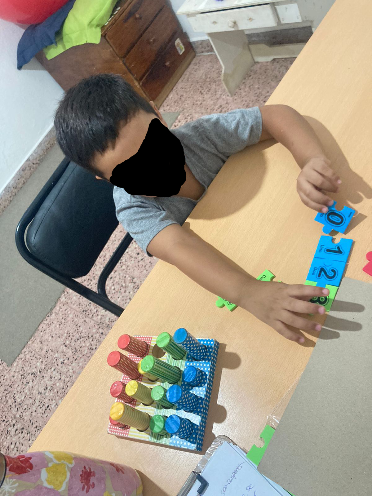
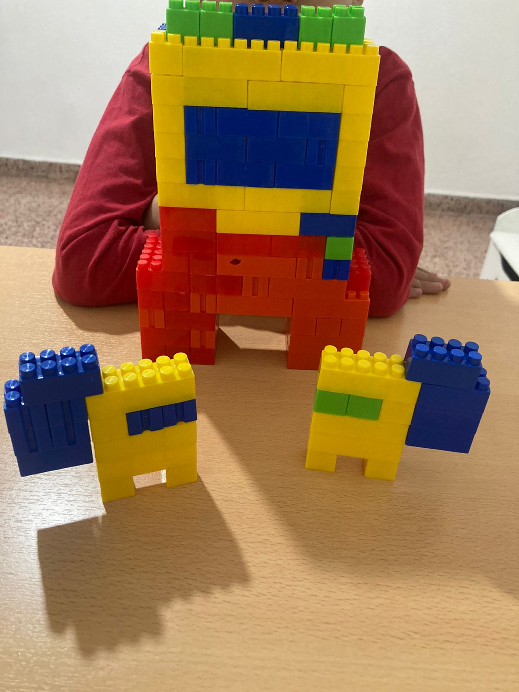
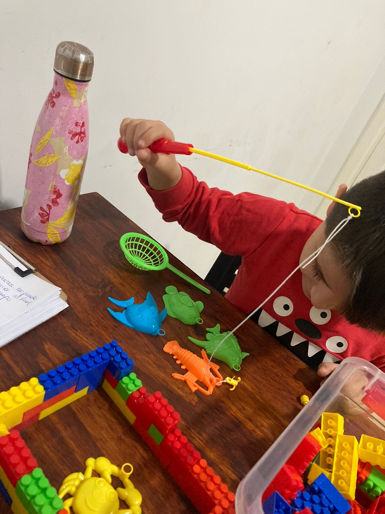

"La ocupacion preferida y mas intensa del nino es el juego. Acaso tendriamos derecho a decir: todo nio que juega se comporta como un poeta, pues se crea un mundo propio o, mejor dicho, inserta las cosas de su mundo en un nuevo orden que le agrada." Sigmund Freud

Aprendemos Jugando
Estimularemos funciones cognitivas con actividades de clasificación y jerarquización de elementos lúdicos. Prologaremos el tiempo de atención y concentración en actividades que le resulten atractivas al niño y le resulten un desafío. Trabajaremos la memoria con juegos específicos, pero sobre todo buscamos motivar al niño a adquirir nuevos aprendizajes.

Impulsamos su creatividad
A través de propuestas lúdicas que le resulten un desafío para el niño, buscamos apostar por su capacidad creativa y su imaginación. Ampliaremos su vocabulario y sus conocimientos introduciendo nuevas variantes a la espontaneidad de su juego. Mediante el juego simbólico, se buscará la adopción de roles familiares y sociales para interpretar la angustia que el niño atraviesa y aún no puede poner en palabras.

Tolerar la frustración
En juegos de reglas, se buscará que el niño pueda tolerar la frustración de la pérdida que exhibe el juego, pero que en un futuro será parte de transitar la vida de aciertos y desaciertos. Se intentará que el proceso otorgue la satisfacción que permita posponer la respuesta pronta, cuestionando la inmediatez que se impone en la actualidad y genera ansiedad en los sujetos. Se buscará el intercambio con el analista verbal y lúdico, trabajando el control de los impulsos y la regulación emocional ante situaciones conflictivas.